1·2위 — 크롬 팀의 웹 가이드와 OpenAI 보안 스캐너
영상은 오늘 저장소 12개를 '트렌딩 7 + 요즘 뜨는 5'로 나눠 가져왔다고 시작해요. 트렌딩은 1, 2, 4, 5, 9, 11, 12위만 골랐고, 3·6·7·8·10위는 다루지 않아요. 전체를 먼저 한 표로 모았어요. 별 수는 영상이 말하거나 화면에 띄운 값이에요.
| 구분 | 저장소 | 만든 곳 | 별 | 한 줄로 |
|---|---|---|---|---|
| 트렌딩 1위 | modern-web-guidance-src | 구글 크롬 팀 | 2,317 | AI가 최신 웹 방식으로 짜게 하는 가이드 |
| 트렌딩 2위 | codex-security | OpenAI | 약 12,000 | 보안 구멍 찾기 → 검증 → 패치 |
| 트렌딩 4위 | HermesEnabler | 한국 개발자 | 약 1,400 | 일반 애플워치에서 에르메스 워치 페이스 |
| 트렌딩 5위 | sure | 커뮤니티 | 13,548 | Maybe Finance를 이어받은 가계부 앱 |
| 트렌딩 9위 | agent-skills | 애디 오스마니 | 약 116,000 | 스펙부터 배포까지 밟게 하는 스킬 25개 |
| 트렌딩 11위 | OpenBot | CopilotKit | 11,272 | 봇마다 컴퓨터가 있는 AI 동료 |
| 트렌딩 12위 | free-claude-code | Alishahryar1 | 68,926 | Claude Code를 무료 모델로 |
| 요즘 뜨는 | univer | dream-num | 23,352 | 웹 서비스에 넣는 스프레드시트·문서 편집기 |
| 요즘 뜨는 | raea | shinyobjectz | 2,227 | GPU(Graphics Processing Unit)로 바로 그리는 영상·게임 렌더러 |
| 요즘 뜨는 | agent-desktop | Vercel Labs | 약 22,500 | 접근성 정보로 데스크톱 앱 조작 |
| 요즘 뜨는 | exact | Expo | 약 3,200 | 한 번 짜서 웹·맥·iOS·리눅스에서 네이티브로 |
| 요즘 뜨는 | OpenMAIC | 칭화대 THU-MAIC | 약 43,000 | AI 선생님과 반 친구가 있는 교실 |
1위 modern-web-guidance-src — AI 코드를 요즘 웹 방식으로
구글 크롬 팀의 저장소예요. 제목 카드에 별 2,317개와 함께 저장소 설명 'Keep your coding agent up to date with the latest web best practices'가 떠요. 코딩 에이전트가 최신 웹 권장 방식대로 코드를 짜게 돕는 가이드라는 뜻이에요.
11월 10일 블로그 발표와 함께 정식 1.0이 나왔어요. 크롬 팀만 만드는 게 아니라 엣지, 파이어폭스, MDN 팀이 같이 관리해요. 아래 화면은 공식 문서의 가이드 목록이에요. 오른쪽 메뉴에 CSS(Cascading Style Sheets), JavaScript, Performance, Accessibility 같은 분류가 보이고, 가이드 203개가 웹 기능 250개를 다뤄요.
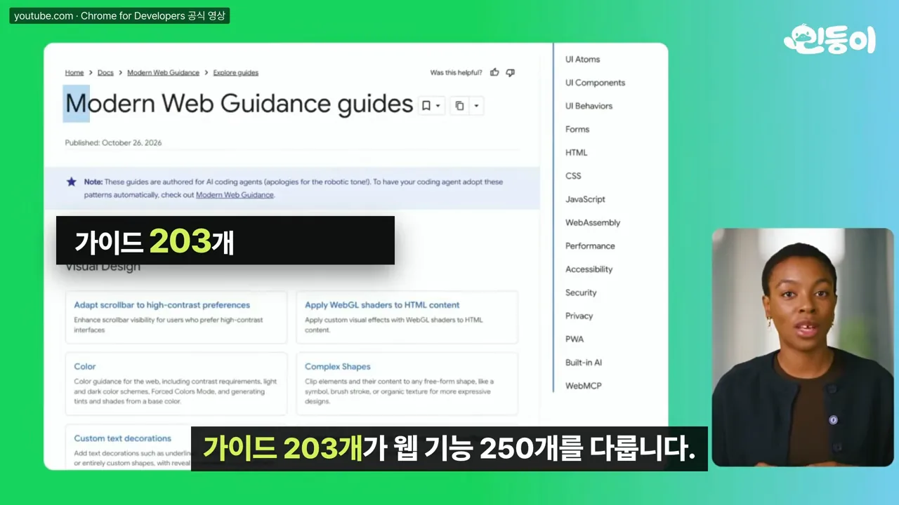
왜 필요할까요? AI가 짠 웹 코드엔 float로 짠 레이아웃이나 jQuery 스크롤처럼 몇 년 전 방식이 자주 섞여요. 학습 데이터에 옛 코드가 많아서예요. 이 가이드를 붙이면 최신 브라우저 권장 방식대로 짜고, legacy-scan으로 이미 짜 둔 코드에서 낡은 부분도 찾아줘요.
효과는 도입 사례로 보여 줘요. 크롬 블로그에 실린 note inc.의 사례는 실제 서비스 코드로 180번 돌려 본 평가예요. 아래 문장의 형광 부분처럼, 최신 웹 방식으로 짰는지 보는 점검 통과율이 61%에서 94%로 올랐어요.
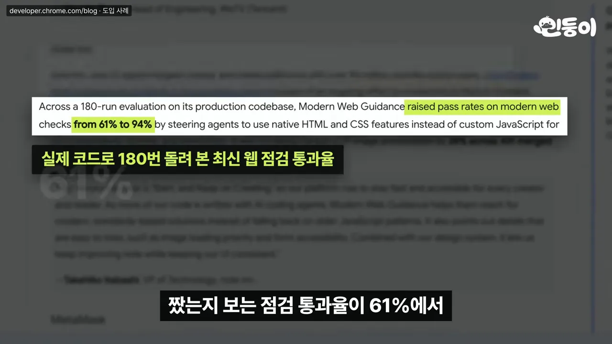
2위 Codex Security — 찾고, 뚫어 보고, 고친다
OpenAI의 보안 도구로 별은 약 1만 2천 개예요. 코드에서 보안 구멍을 찾고 고치는 것까지 도와줘요. 영상 당일 v0.10.0이 나왔어요. 아래는 그 릴리스 페이지로, 'Latest' 표시가 붙어 있어요.
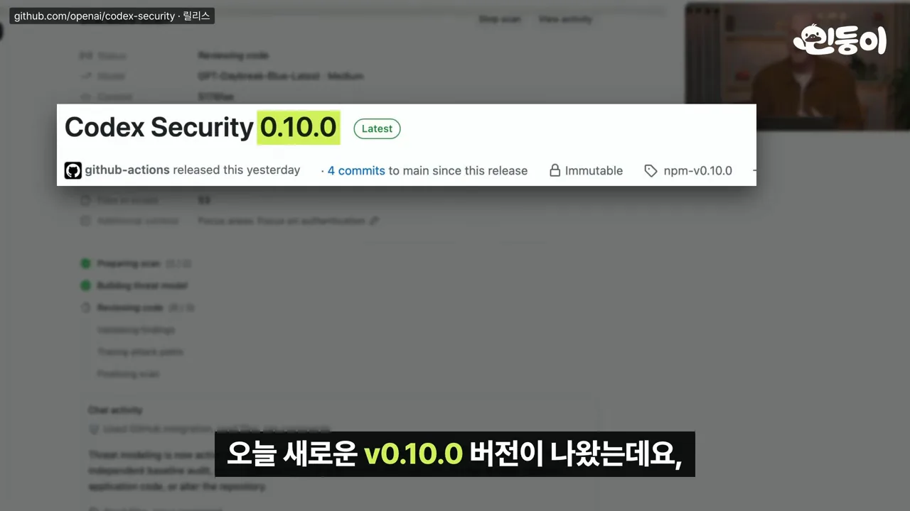
쓰는 법은 명령어 한 줄이에요. 코드 전체에서 구멍을 찾고, 그게 진짜인지 샌드박스에서 실제로 뚫어 본 다음, 고칠 패치까지 내놔요. 찾기만 하는 스캐너와 달리 '정말 뚫리는지'를 확인하는 단계가 들어 있는 게 핵심이에요.
성적은 3월 OpenAI 발표에서 가져왔어요. 화면의 원문 문장대로 30일 동안 외부 저장소 커밋 120만 개를 훑어 심각한 문제 792건을 찾았어요.
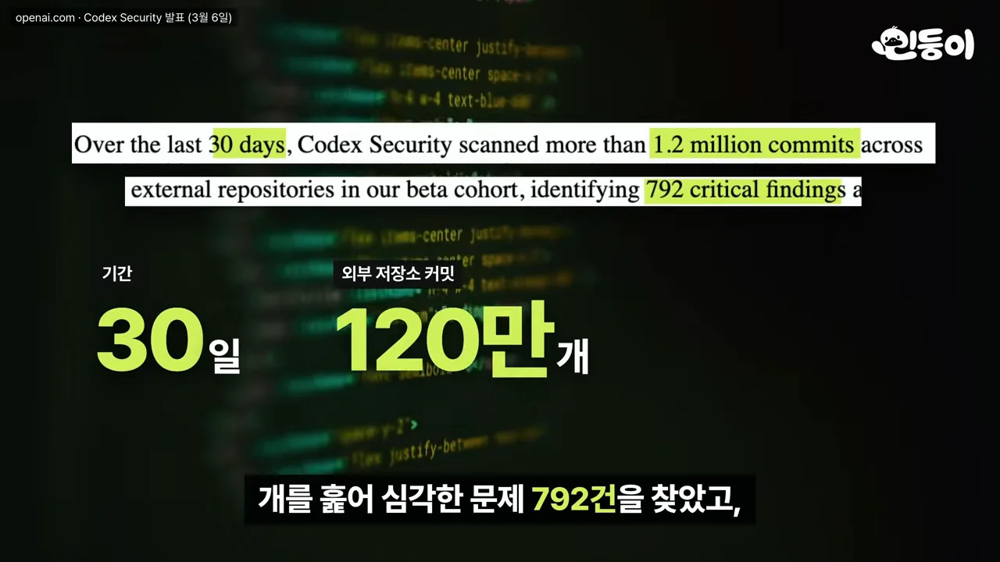
찾은 구멍 중엔 유명 프로젝트 것도 있어요. 원문 문장에 OpenSSH, PHP(Hypertext Preprocessor), Chromium이 형광으로 칠해져 있고, 이 구멍들로 CVE 14건('Fourteen CVEs')이 등록됐어요.
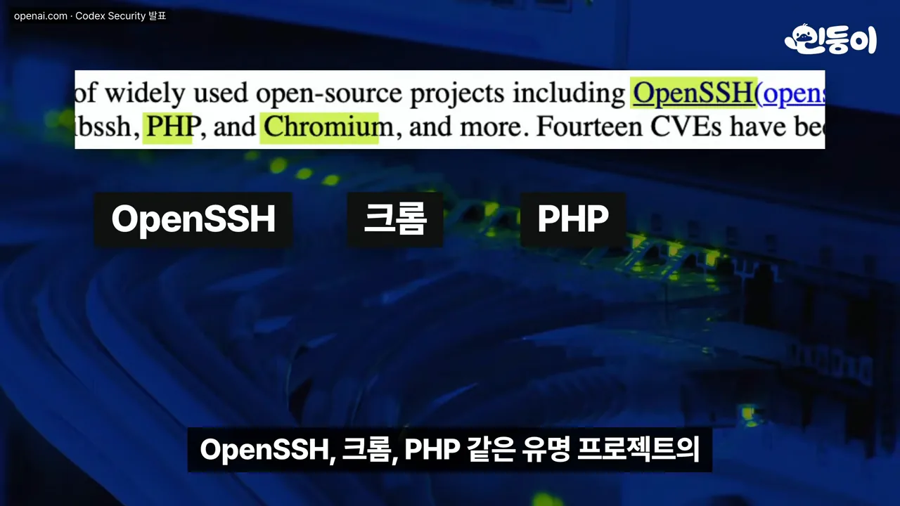
같은 저장소를 다시 스캔하면 결과가 깔끔해진다고도 해요. 오른쪽 숫자처럼 잡음은 84%, 오탐은 절반 넘게 줄었어요.
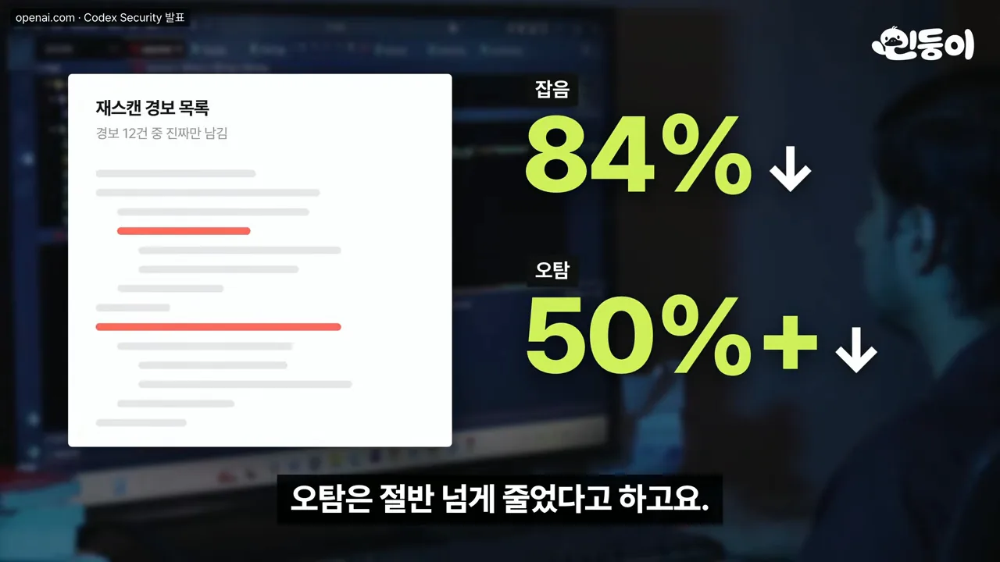
0.10.0에서 달라진 건 두 가지예요. 위쪽 줄은 중간에 끊긴 Standard 스캔을 codex-security scans resume SCAN_ID로 멈춘 자리부터 이어 돌리는 기능이에요. 아래쪽 줄은 --max-total-cost로 전체 비용 상한을 정해, 막대가 그 지점에서 멈추는 기능이에요.
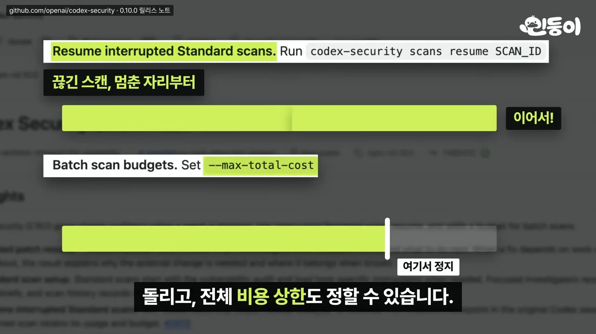
발전 속도도 빨라요. 왼쪽은 릴리스 목록이고, 오른쪽 숫자처럼 7월 31일 이후 릴리스가 43번이에요. 100여 일 동안 평균 2~3일에 한 번꼴이에요.
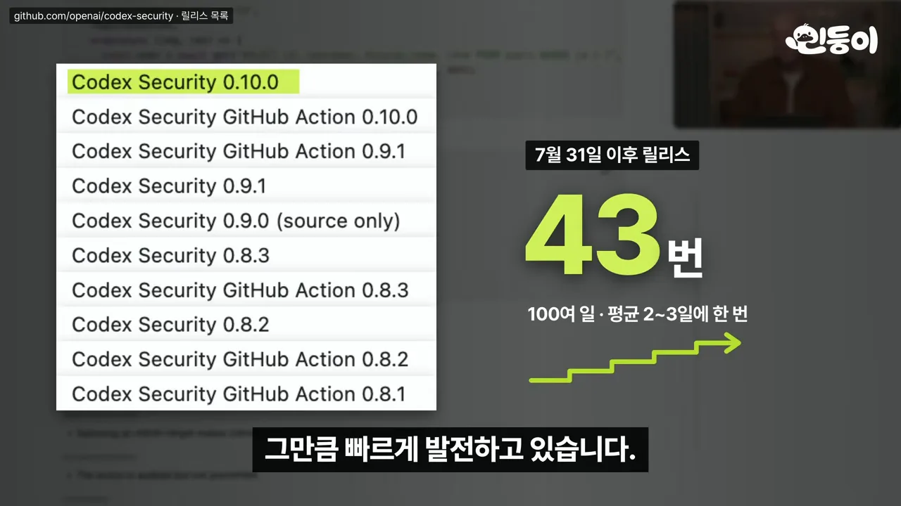
대신 큰 저장소는 스캔 시간과 사용량이 꽤 들어요. 가운데 카드가 영상이 띄운 Hacker News 사용자 후기로, '스캔 한 번 50분, 주간 사용량 절반'이었어요. 그래서 쓰기 전에 비용 상한부터 걸어 두라고 해요.
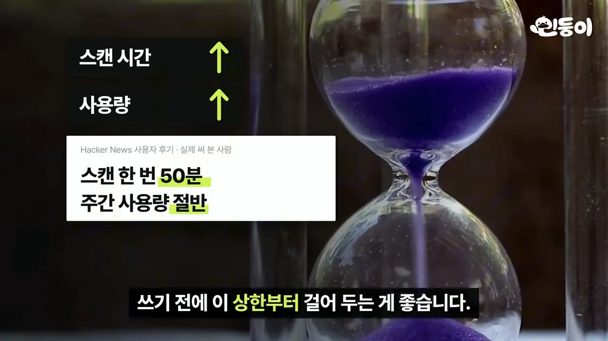
4·5위 — 에르메스 워치 페이스와 가계부 앱 Sure
4위 HermesEnabler — 일반 애플워치에서 에르메스 워치 페이스
별 약 1,400개를 받은 이 도구는 에르메스 에디션 애플워치에만 있는 전용 워치 페이스를 일반 애플워치에서 켜 줘요. 저장소 설명도 'Enable Hermès Watch Faces on any Apple Watch devices'예요. 한국 개발자가 만들었고, 11월 9일 X에 올린 소개글이 좋아요 약 2,000개를 받았어요.
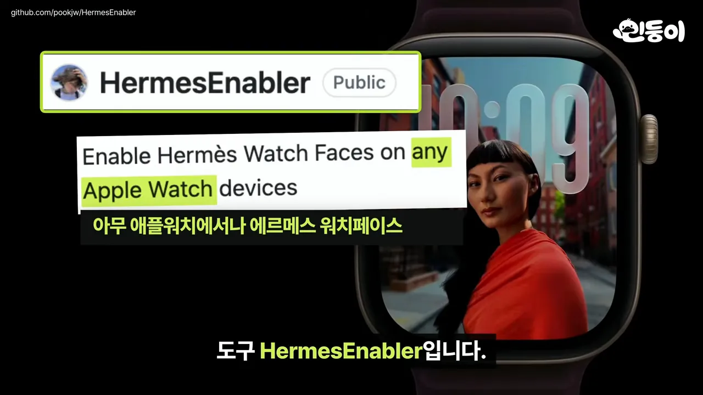
원리는 단순해요. 기기 브랜드를 나타내는 값 DeviceBrand를 0에서 1로 바꿔요. 그러면 애플워치가 자기를 에르메스 모델로 알아보고 전용 페이스를 열어 줘요. 아래 그림의 다이얼이 그 값을 0에서 1로 돌리는 모습이에요.
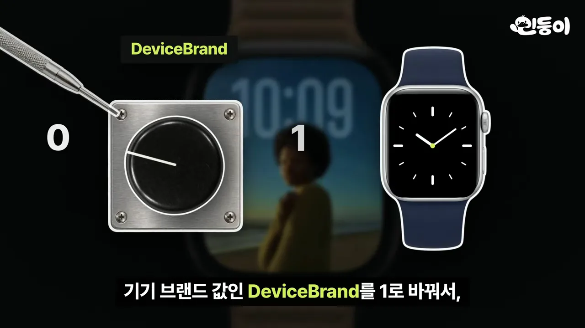
제약이 커요. README 첫 줄처럼 watchOS 27.0부터 27.3 베타 1까지만 돼요. 앱스토어 앱이 아니라서 Sideloadly나 Xcode로 직접 넣는 사이드로딩 방식이에요. 개발자도 문제가 생기면 사용자 책임이라고 안내해요.
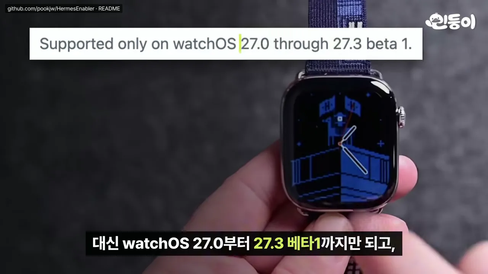
5위 Sure — 회사가 버린 가계부를 커뮤니티가 이어받다
별 약 13,500개의 오픈소스 가계부 앱이에요. 트렌딩에 오른 계기는 11월 10일 알파 버전이에요. 화면 위쪽 버전 이름 v2026.11.10-alpha 아래에 'Add a Monarch importer'가 보여요. 다른 가계부 앱 Monarch의 데이터를 그대로 가져오는 기능이에요.
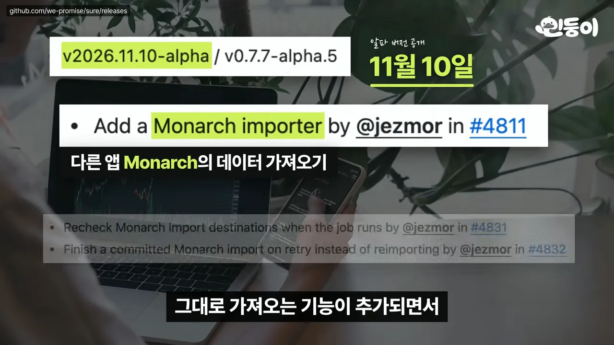
뿌리가 흥미로워요. 원래는 별 54,000개를 받은 가계부 앱 Maybe Finance였어요. 회사가 기업용 사업으로 돌아서며 손을 떼자, 커뮤니티가 이어받아 만든 버전이 Sure예요.
쓰는 방식은 셀프 호스팅이에요. Docker로 내 컴퓨터나 서버에 띄워요. 앱 안에 AI 비서도 있어요. OpenAI나 Anthropic API(Application Programming Interface)를 붙여도 되고, Ollama 같은 로컬 모델을 쓰면 API 요금 없이 쓸 수 있어요.
MCP(Model Context Protocol)도 지원해요. 아래 화면의 문서 제목이 'MCP Server for External AI Assistants'예요. 바깥 AI가 내 돈 기록을 읽고 처리할 수 있어서, 쓰던 클로드 구독 그대로 Claude 앱이나 Claude Code에서 '지난 석 달 얼마 모았지?'처럼 물어볼 수 있어요.
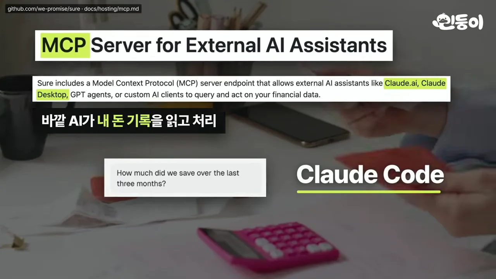
9·11·12위 — 개발 스킬, AI 동료, 무료 Claude Code
9위 agent-skills — 코드부터 짜지 않게 하는 스킬 25개
별 약 11만 6천 개로, 전날 영상에서도 소개한 저장소예요. 만든 사람은 아래 화면의 애디 오스마니예요. 구글에서 14년 일했고, 지금은 Anthropic에서 Claude Code를 만들고 있어요. 화면 자막에도 'Member of Technical Staff at Anthropic, works on Claude Code'가 떠요.
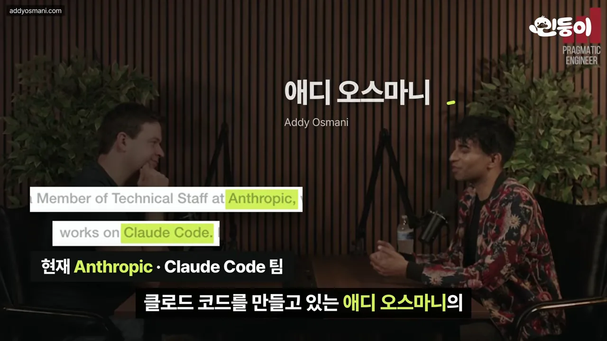
목표는 AI 코딩 에이전트가 바로 코드부터 짜지 않게 하는 거예요. 스펙 → 계획 → 구현 → 테스트 → 리뷰 → 배포 순서를 밟게 해요. 설치는 명령어 한 줄로 스킬 25개를 깔고, 오른쪽 목록 같은 슬래시 명령 9개로 필요한 단계를 불러 써요.
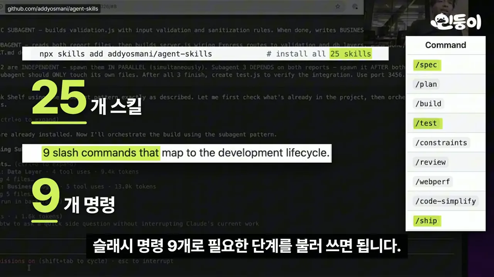
npx skills add addyosmani/agent-skills # 스킬 25개 한꺼번에 설치성장세도 짚어요. 5월 블로그 글 때 27,000개였던 별이 반년 만에 네 배 넘게 늘었어요.
11위 OpenBot — 봇마다 컴퓨터 한 대씩
별 약 11,000개예요. 제목 카드의 질문 '봇마다 컴퓨터 한 대씩?'이 이 도구를 한 줄로 요약해요. 영상은 'xAI의 그록 봇이나 OpenAI의 닷츠처럼' 내 일을 대신해 주는 AI 비서를 오픈소스로 공개한 거라고 소개해요.
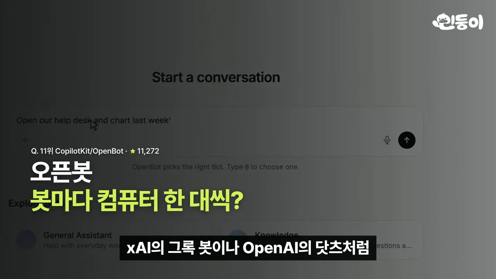
만든 곳은 AG-UI를 만든 CopilotKit이에요. 아래 발표 화면처럼 11월 9일 v1.0.0이 나왔고, 그 뒤 사흘 내리 세 버전이 더 나왔어요.
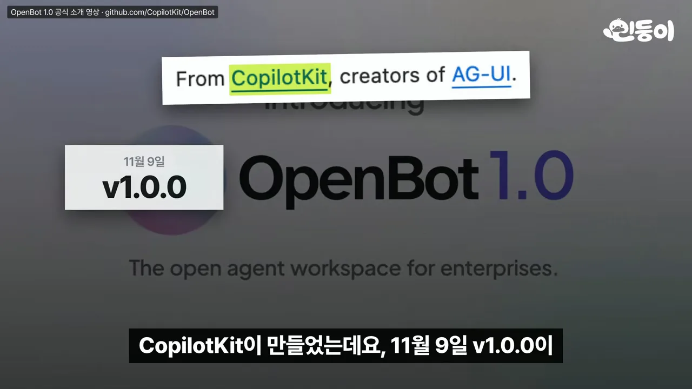
봇마다 자기 컴퓨터와 브라우저가 있어서 일을 끝까지 해요. 데모에선 지난주 고객 문의 214건을 Late delivery, Tracking, Damaged item 같은 분류로 나눠 막대 차트를 만들었어요. 이어서 그 차트를 Gmail로 Dana에게 보내는 것까지 했어요. 왼쪽 아래 'Used Gmail · Sent. Dana has the chart.'가 그 결과예요.
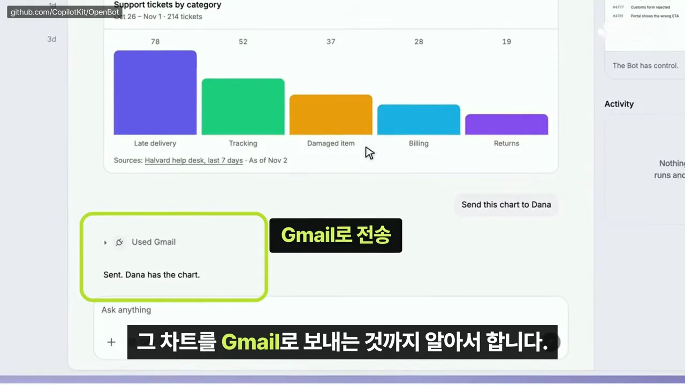
브라우저에서 한 번 보여 준 일은 녹화해서 스킬로 배워요. 이미 쓰고 있는 다른 에이전트도 붙일 수 있어요. 아래 화면처럼 AG-UI로 말하는 에이전트라면 주소만 넣으면 돼요.
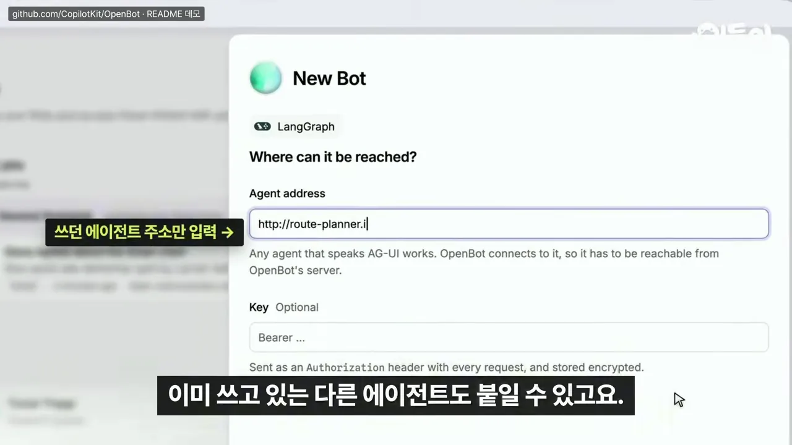
안전장치도 두 가지 있어요. 메일 발송처럼 중요한 일은 실행 전에 내 승인을 받아요. 아래 화면의 'Waiting for your approval: send email on Gmail' 카드에 Allow once와 Deny 버튼이 있어요.
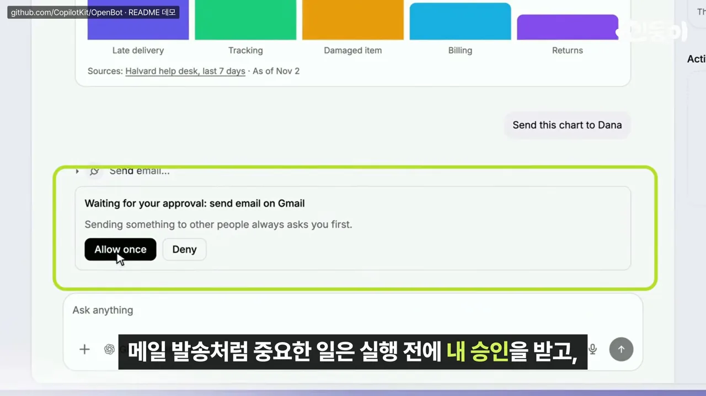
로그인이나 2단계 인증에서 막히면 'Take the wheel'로 사람이 직접 넘겨받아 처리해요. 오른쪽 패널의 'You have control'과 Hand back 버튼이 그 상태예요. 맥이나 윈도우에 앱으로 바로 설치할 수도 있고, 내 서버에 올려 쓸 수도 있어요.
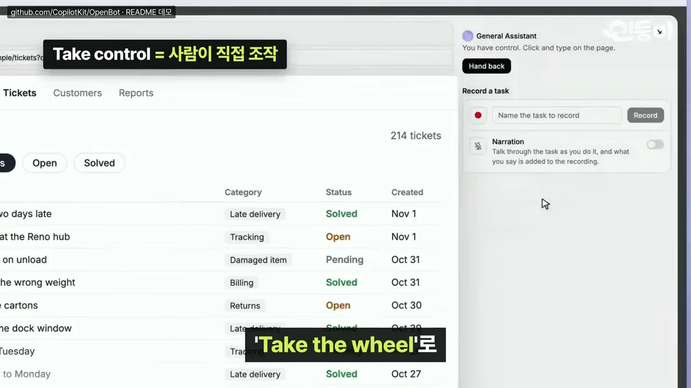
12위 free-claude-code — Claude Code를 무료 모델로
별 약 69,000개예요. 제목 카드에 저장소 이름 Alishahryar1/free-claude-code와 별 68,926개가 떠요. 카드의 질문처럼 Claude Code를 무료 모델로 돌려 쓰게 해 주는 도구예요.
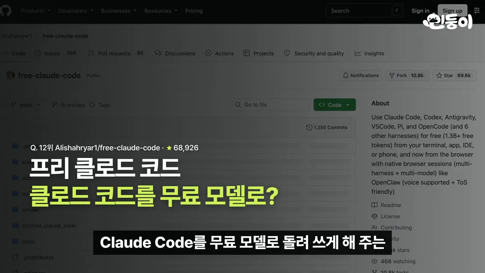
방식은 아래 그림과 같아요. 내 컴퓨터에 프록시를 띄우고, Claude Code가 보내는 요청을 그 프록시가 받아 다른 무료 모델로 넘겨요. 기본으로는 엔비디아 NIM(NVIDIA Inference Microservices) 모델에 연결돼요.
flowchart TB A["Claude Code 등 하네스 12개"] --> B["내 컴퓨터의 프록시"] B --> C["기본: NVIDIA NIM"] B --> D["그 밖의 제공처 (모두 61곳)"]
아래 화면이 기본 연결처인 엔비디아 NIM의 모델 목록이에요. 붙일 수 있는 제공처가 61곳이고, Codex나 OpenCode 같은 하네스도 12개를 지원해요.
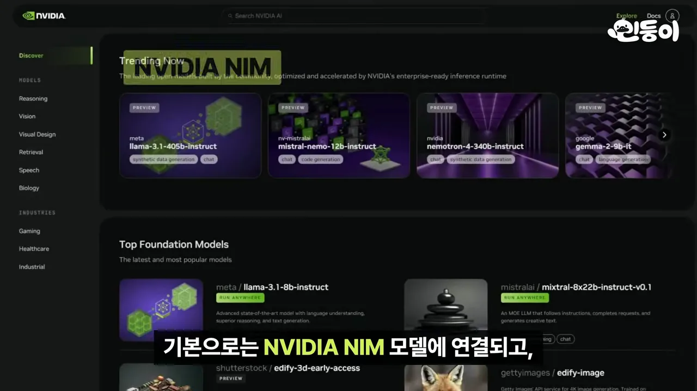
다만 무료 한도는 제공처가 정해요. README 문장 'Free-tier availability and limits are controlled by each provider and may change'처럼, 언제든 줄거나 아예 끝날 수 있어요.
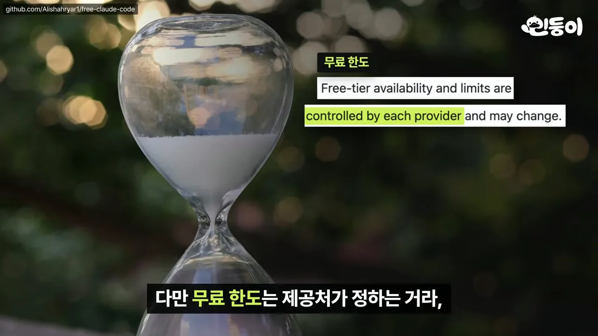
요즘 뜨는 저장소 ① — 웹 속 엑셀 Univer, GPU 렌더러 raea
여기서부터는 트렌딩 순위가 아니라 요즘 주목받는 저장소 다섯 개예요. 화면 위쪽 탭에 univer, raea, agent-desktop, exact, OpenMAIC 순서가 보여요. 이 섹션은 앞의 두 개를 다뤄요.
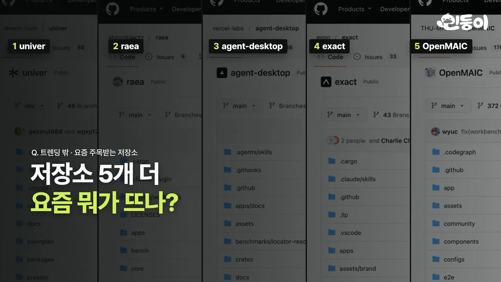
Univer — 내 웹 서비스에 엑셀을 통째로
별 약 23,000개예요. 내 웹에 엑셀 같은 스프레드시트와 문서 편집기를 통째로 넣을 수 있게 해 주는 SDK(Software Development Kit)예요. 11월 7일 1.4.0이 나왔어요. 내가 만든 서비스에 표가 필요하면 처음부터 만들 필요 없이 이걸 붙이면 돼요.
표 계산도 엑셀처럼 돌아요. 아래 표에서 B2의 수량 4를 바꾸면 D2 금액(100)이 다시 계산되고, 그 칸에 걸린 D4 합계(200)도 바로 따라 바뀌어요.
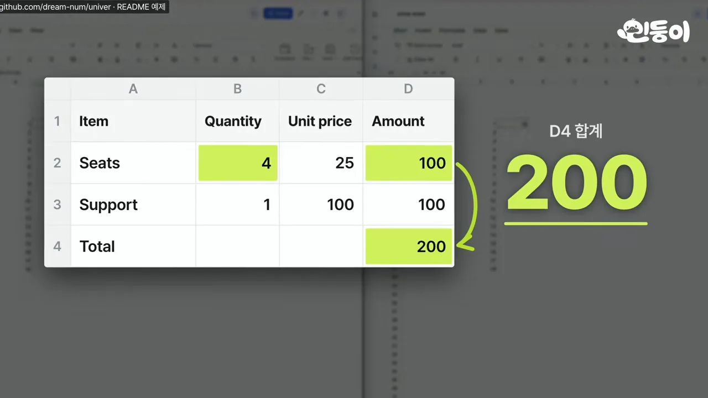
서버용으로 따로 만든 Rust 수식 엔진은 성능을 자랑해요. 공식 블로그 제목이 '서버에서 백만 단위 수식 계산'이고, 판매 데이터를 COUNTIFS로 조건부 집계하는 데 3.54초가 걸렸어요.
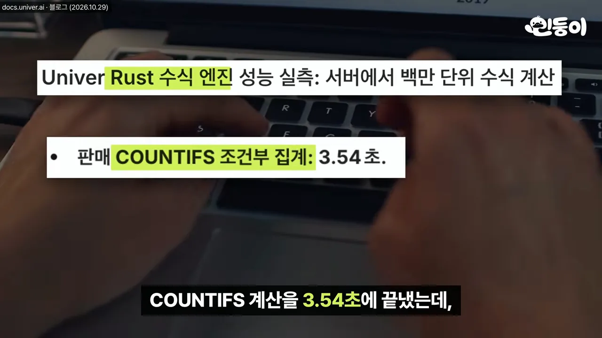
같은 작업에 엑셀은 19.47초, 리브레오피스는 320초가 걸렸다고 해요. 영상 속 막대는 애니메이션 중이라 길이를 읽기 어려워서, 세 숫자를 한 눈금으로 다시 그렸어요.
영상은 단서도 같이 전해요. 재는 방식이 완전히 같지 않았고(Rust 쪽은 미리 만든 스냅샷을 읽고, 엑셀·리브레오피스는 원본 XLSX(Excel Open XML Spreadsheet)를 여는 시간까지 포함), 다른 계산에선 엑셀이 더 빨랐다고 Univer가 같이 밝혔어요.
무료와 유료의 차이도 커요. 무료 오픈소스판에는 아래 카드처럼 서버용 구성 요소 Univer Server가 빠져 있어요. 수식 엔진도 유료판보다 느리다고 해요.
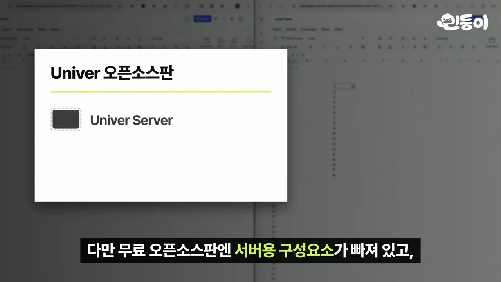
유료 플랜 Univer Pro는 월 99달러부터예요.
raea — 말하면 GPU가 바로 그려 주는 렌더러
별 약 2,200개예요. 제목 카드 질문처럼 AI에게 말만 하면 영상부터 3D, 게임까지 만들어 그래픽 카드로 바로 렌더링하는 엔진이에요. 영상 당일 첫 정식 버전과 데스크톱 앱을 공개했어요.
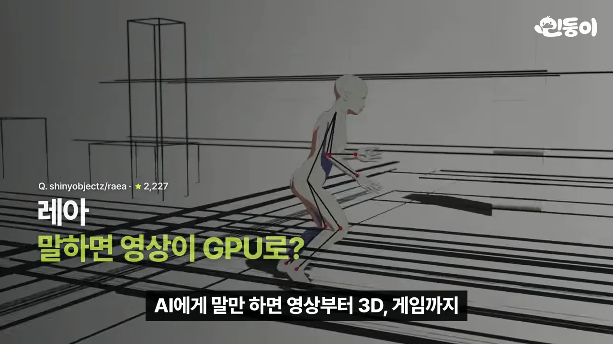
가장 큰 특징은 속도예요. 개발자가 11월 8일 같은 장면 6개를 렌더링해 비교했어요. 아래처럼 6개 장면을 다 뽑기까지 Remotion은 25초, HyperFrames는 34.5초가 걸렸고, raea는 7.2초에 끝냈어요.
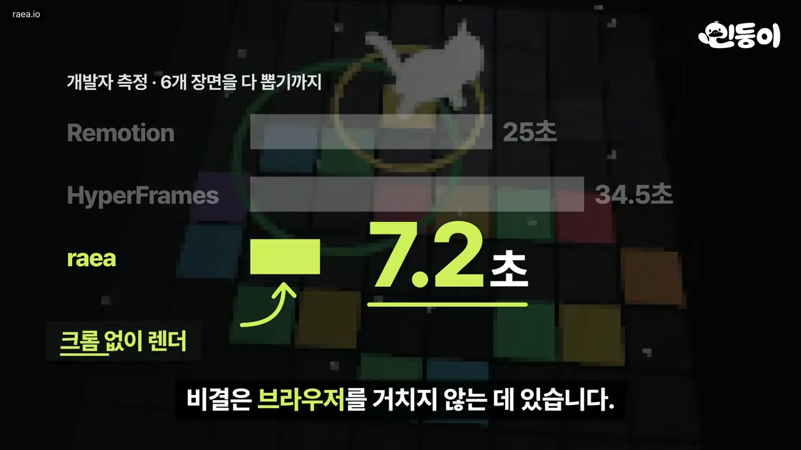
비결은 브라우저를 거치지 않는 데 있어요. Remotion이나 HyperFrames는 아래 그림처럼 장면을 브라우저로 그린 다음 카메라로 찍듯 한 장씩 찍어요.
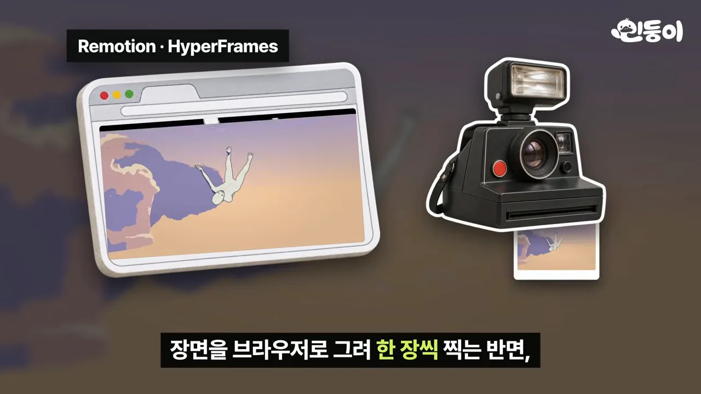
반면 raea는 AI가 React와 TypeScript로 쓴 장면을, Rust로 만든 자체 엔진이 그래픽 카드에서 바로 그려요. 렌더링이 빠른 만큼 결과를 확인하고 AI에게 수정을 요청하는 사이클도 빨라져요.
결과는 MP4(MPEG-4 Part 14)로 뽑거나 게임으로 돌릴 수 있어요. 공식 갤러리 'Made in raea.'엔 광고·게임 예시 영상 13편이 올라와 있어요.
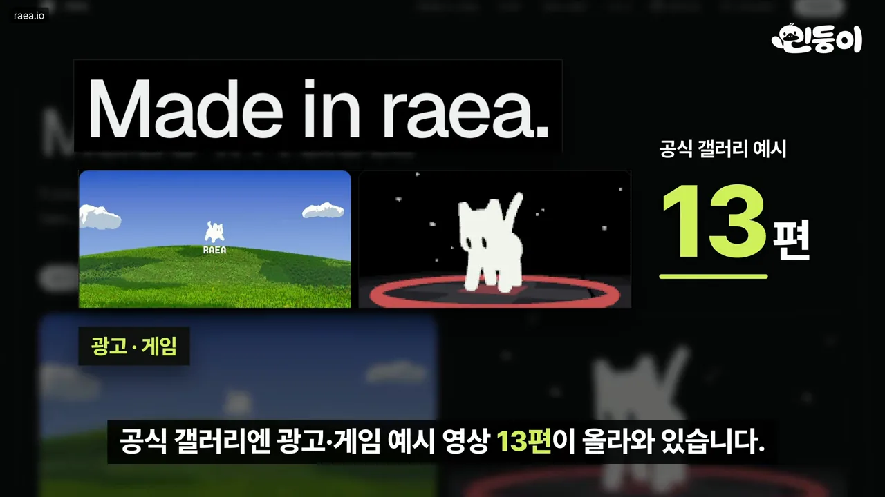
단서가 두 가지 있어요. 속도 숫자는 개발자 본인 측정이에요. 그리고 윈도우에선 설치나 실행이 실패한다는 제보가 있어요. 화면의 이슈 #80은 raea play game.tsx와 raea play hello.tsx가 둘 다 번들링 단계에서 실패한다는 내용이에요.
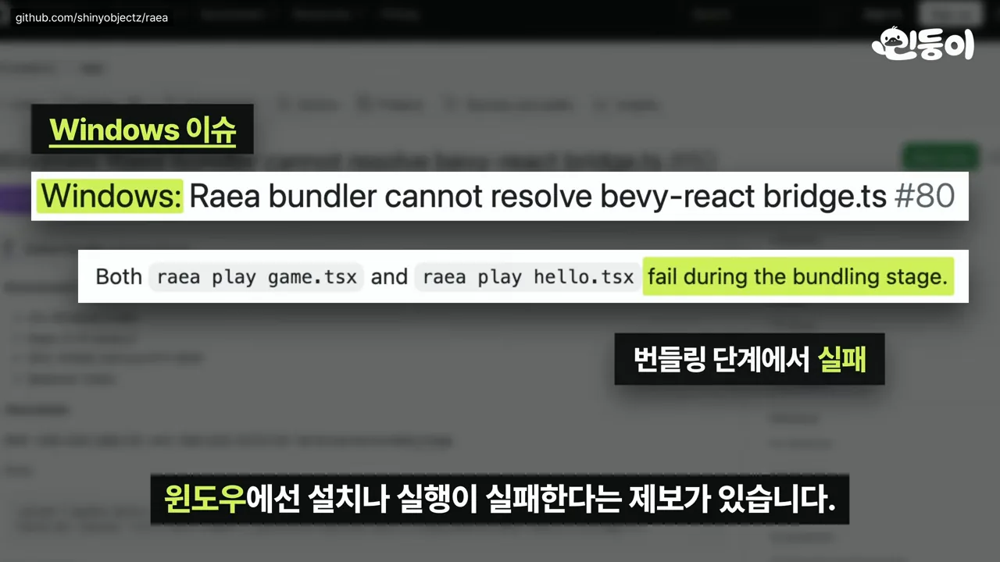
요즘 뜨는 저장소 ② — 데스크톱 조작, 한 번 짜는 앱, AI 교실
agent-desktop — 화면 대신 접근성 정보로 앱을 누른다
AI 에이전트가 이제 데스크톱 앱까지 직접 눌러요. Vercel Labs가 만든 agent-desktop으로, 별은 약 22,500개예요. 아래처럼 이번 주 깃허브 주간 트렌딩 6위에 올랐고, 10월 30일 발표글은 좋아요 1만 개를 넘겼어요.
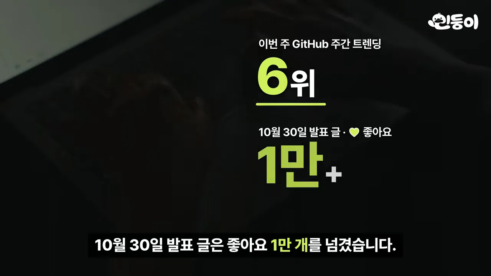
방식이 달라요. 화면을 캡처해 분석하는 대신 운영체제의 접근성 정보를 읽어요. 아래 그림의 계산기처럼 앱의 버튼과 입력창이 접근성 트리에 하나씩 나와 있고, 에이전트는 요소마다 붙은 번호로 클릭하거나 글자를 넣어요.
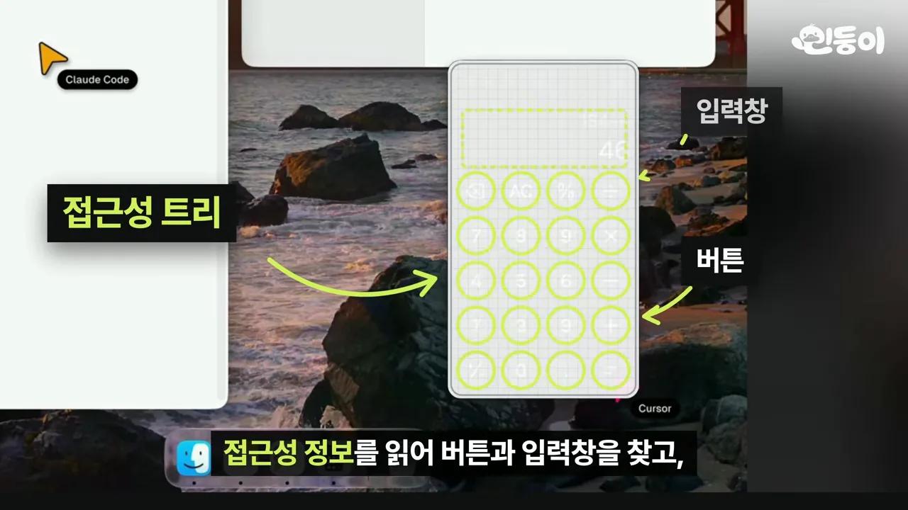
백그라운드에서 돌아서 내가 화면을 지켜볼 필요도 없어요. README 문장처럼 기본이 'Headless'라서, 마우스 포인터도 화면 포커스도 뺏지 않아요. 11월 5일 1.2에선 MCP 지원도 들어갔어요.
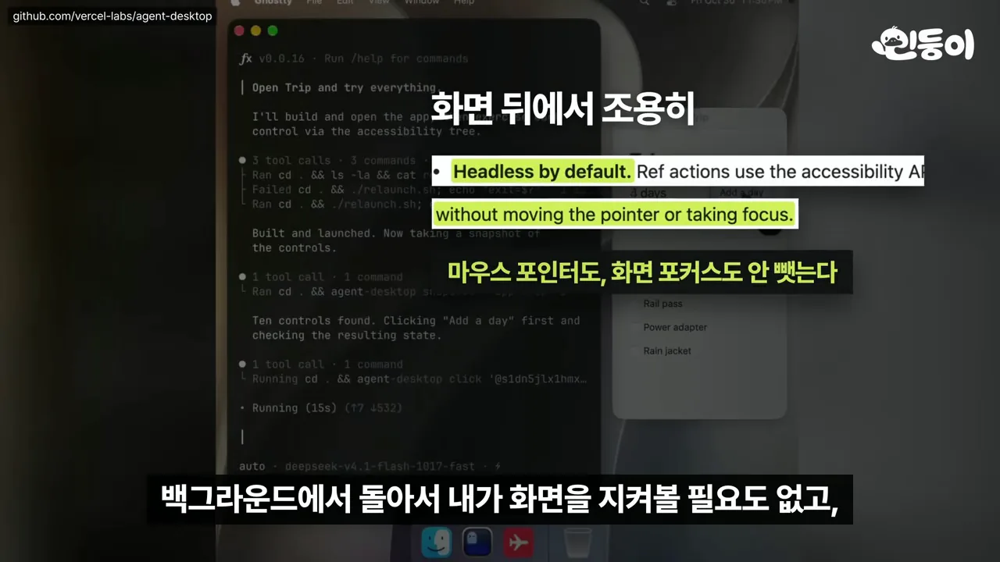
다만 아직 한글은 잘 인식하지 못한다는 후기가 있어요.
exact — React 없이 한 번 짜서 네 플랫폼에
별 약 3,200개를 받은 exact는 Expo가 만든 앱 런타임이에요. React 없이 한 번 짠 코드로 웹과 맥, iOS, 리눅스에서 네이티브로 돌아가는 앱을 만들어요. 아래 화면에 같은 쇼핑 앱이 iPhone, Android, macOS, 웹 창에 나란히 떠 있어요.
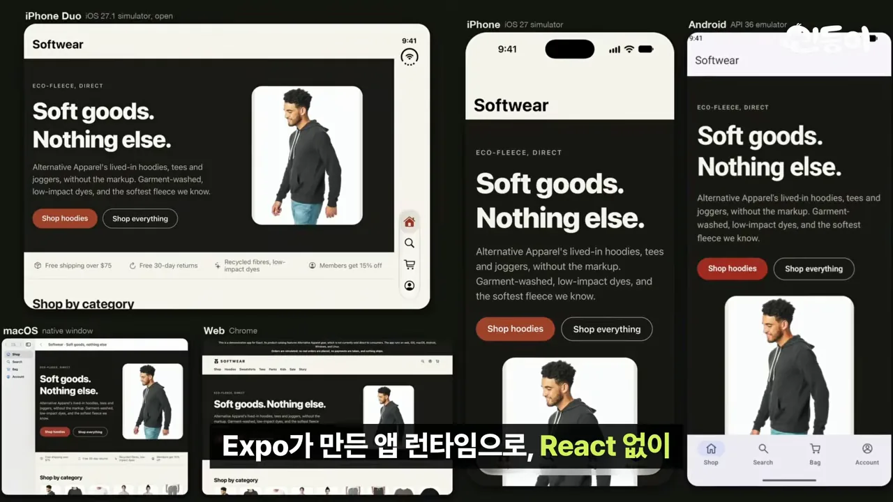
11월 9일 처음 공개됐고, 공동 창업자의 발표글은 좋아요 2,800개를 넘겼어요. Hacker News에선 댓글 109개가 달렸어요.
처음부터 AI 에이전트가 쓰기 좋게 설계됐어요. README 문장처럼 에이전트가 직접 만들고, 돌려 보고, 화면을 보고, 테스트까지 해요. 실제로 에이전트가 할 일 앱 하나를 57분쯤 만에 만들었다고 해요.
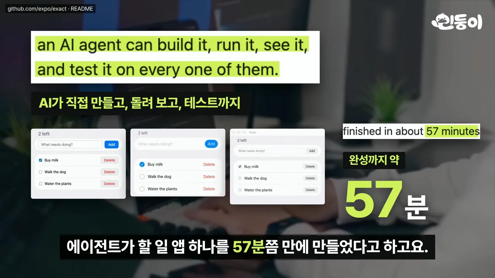
테스트도 빨라요. 1분 뒤에 실행되는 기능이 있으면, 기다리지 않고 clock +60000으로 시간을 1분(60,000밀리초) 앞당겨 바로 확인해요.
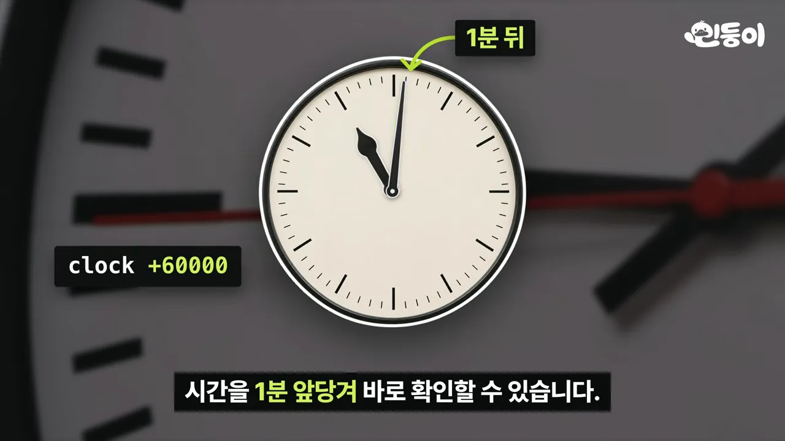
OpenMAIC — AI 선생님과 AI 반 친구가 있는 교실
별 약 43,000개로, 칭화대 팀(THU-MAIC)이 만든 오픈소스 교실이에요. 주제나 문서를 넣으면 여러 AI가 선생님과 반 친구를 맡아 토론하는 수업으로 바꿔 줘요.
영상 당일 나온 1.5 후보판에선 홈 화면이 새로 바뀌었어요. 아래처럼 가운데 창에 주제 한 줄('7-Day Beginner Python Course Series')만 넣으면 돼요.
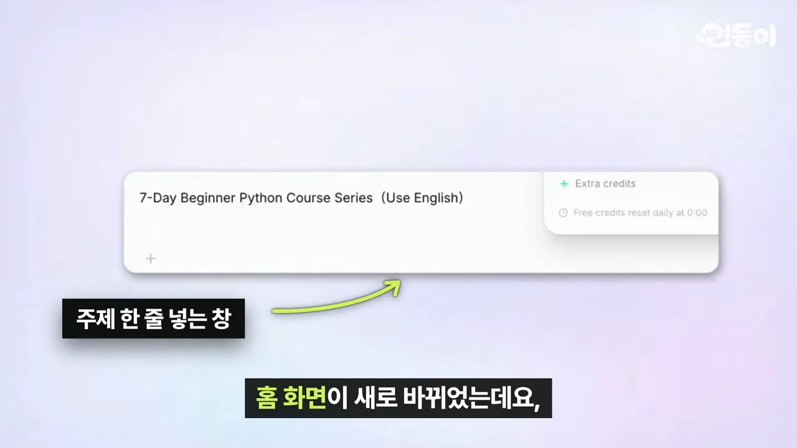
AI와 대화하면서 옆에 수업을 띄워 두고 바로 확인하거나 고칠 수 있어요. 왼쪽엔 Day 1부터 Day 7까지 만들어진 커리큘럼이, 가운데엔 Day 2 'Build a Tip and Budget Calculator' 수업 화면이 떠 있어요.
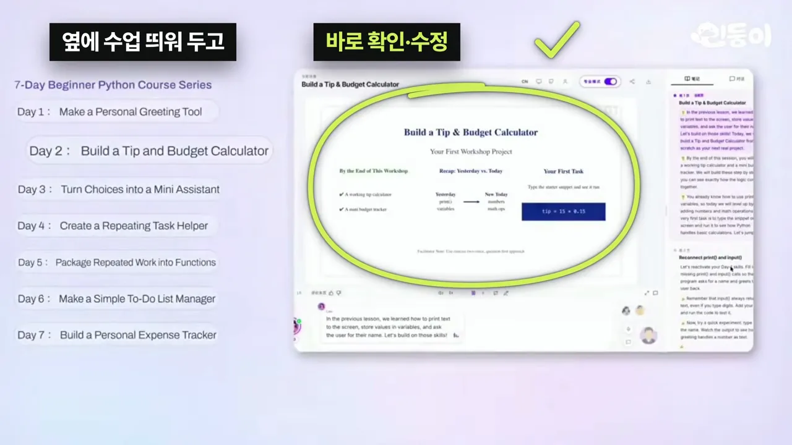
수업엔 화이트보드와 퀴즈가 들어가고, 자료는 PPTX(PowerPoint Open XML Presentation)로 내보내 파워포인트에서 바로 열 수 있어요.
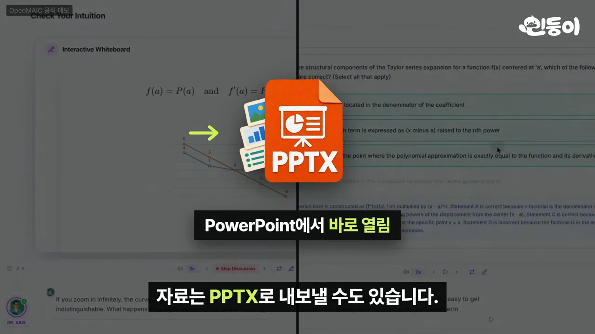
앞서 11월 4일 1.4에는 PBL(Project-Based Learning) v3가 들어갔어요. 학습자가 직접 프로젝트를 만들며 바이브 코딩을 해 볼 수 있어요. 아래 화면은 'Designing the Eco-City' 과제로, 왼쪽 이슈 보드에 단계별 과제가 놓이고 오른쪽에서 AI와 토론해요.
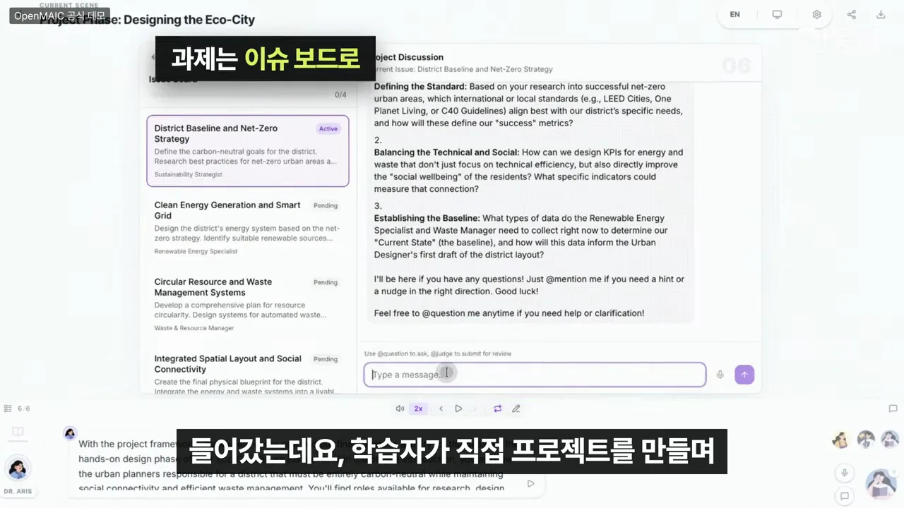
설치 없이 써 보려면 open.maic.chat에 들어가면 돼요.
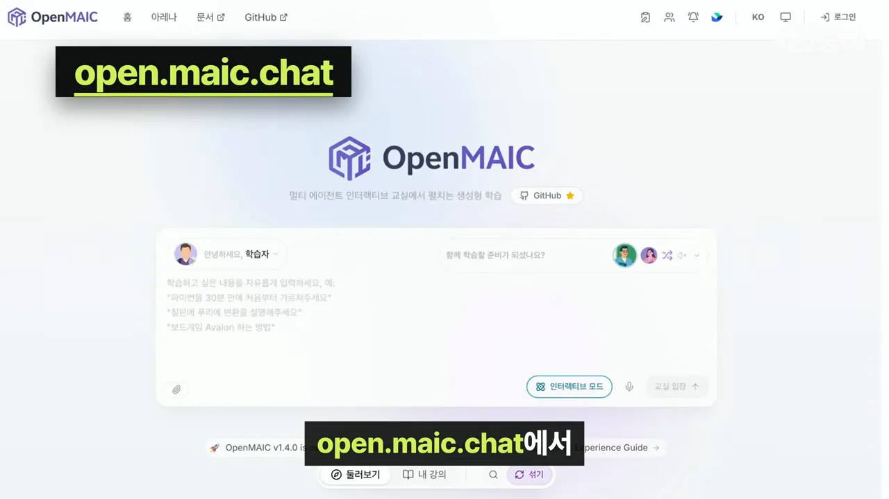